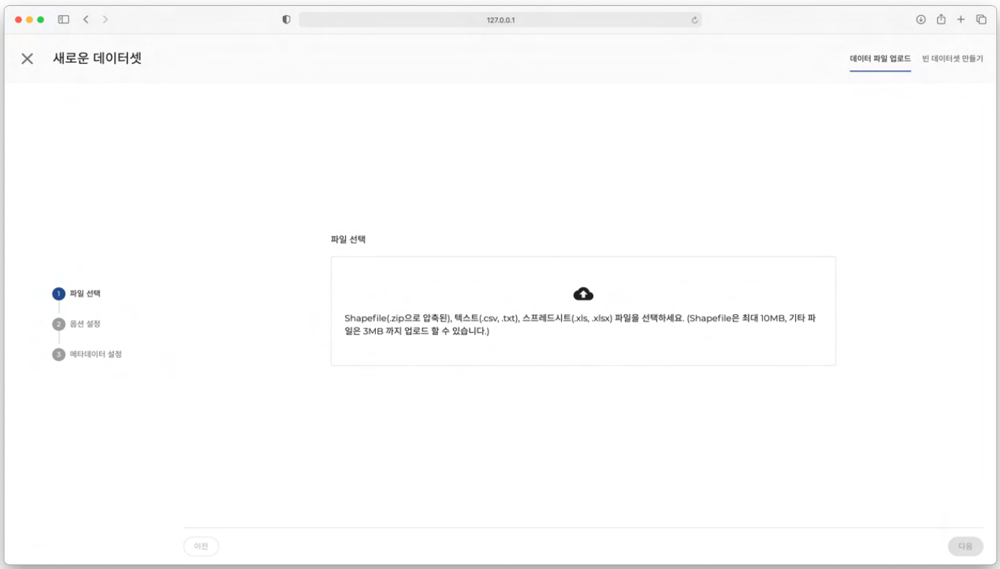
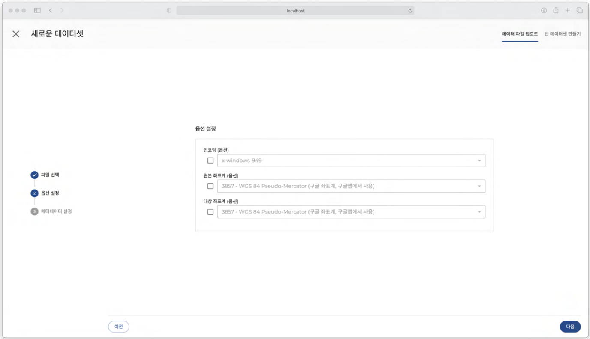

데이터셋
데이터셋은 레이어 또는 분석을 위해 필요한 데이터들의 모음입니다. 실제 파일 업로드를 통해 만들어지기도 하며, 사용자가 직접 입력하여 데이터셋을 만들 수도 있습니다. 프로젝트 팀원의 권한에 따라 데이터셋을 생성, 수정 또는 삭제를 할 수 있습니다.
지오메트리 유형 데이터셋의 기본 유형으로, 크게 3가지로 구분되어 있습니다 포인트(점) 데이터, 라인(선) 데이터, 폴리곤(면) 데이터로 구분됩니다.
데이터 필드
데이터셋의 필드는 각각의 정보가 입력되는 최소 단위입니다. 필드마다 입력할 수 있는 데이터 타입은 한가지로 정해져 있으며, 필드는 필수적으로 입력해야 하는 필드와 그렇지 않은 필드로 나뉩니다.
데이터 타입 |
특징 |
|---|---|
문자형 |
문자형 데이터만 입력이 가능합니다. 숫자는 입력이 불가능합니다.
영문 대/소문자, 한글 등
|
숫자형 |
숫자형 데이터만 입력이 가능합니다. 문자는 입력이 불가능합니다.
정수형, 실수형으로 구분
|
선택형 |
미리 입력된 데이터 중 선택합니다.
필드 추가 시, 선택할 데이터를 미리 입력해야 합니다.
|
예/아니오형형 |
예/아니오 의 데이터만 입력이 가능합니다. |
날짜형 |
날짜형 데이터만 입력이 가능합니다.
예 : 2021-08-11
|
메타데이터
데이터셋의 메타데이터는 데이터셋 이름, 공간 타입, 지오메트리 타입, 개수, 용량, 작성일 등 데이터셋에 대한 정보를 담고 있습니다.
메타데이터 |
특징 |
|---|---|
제목 |
데이터셋 제목 |
소개 |
데이터셋에 관한 간략한 설명 |
공개 범위 |
데이터셋의 공개 범위 |
공간 타입 |
데이터셋의 공간 데이터 타입
포인트 / 라인 / 폴리곤
|
지오메트리 타입 |
공간데이터의 지오메트리 타입
포인트(MULTIPOINT)
라인(LINESTRING)
폴리곤 (MULTIPOLYGON)
|
SRID |
메타데이터의 좌표계 |
개수 |
데이터의 개수 |
용량 |
데이터의 용량 |
작성일 |
데이터 생성일 |
갱신일 |
데이터 갱신일 |
중심점 |
지도의 중심점(좌표) |
WGS84 bounds |
지도의 범위(좌상단 좌표, 우하단 좌표) |
데이터셋 만들기
파일로 데이터셋 만들기 프로젝트 메뉴의 데이터셋을 클릭합니다. 내가 가지고 있는 파일 파일 Shape , CSV, 엑셀파일을 선택하여 옵션과 메타데이터를 설정하고 업로드하면 데이터셋이 생성됩니다.
아래는 파일로 데이터셋 만들기에서 업로드 가능한 파일의 형식과 설명입니다.
파일형식 |
확장자 |
설명 |
|---|---|---|
Shape |
zip |
기하학적 위치 및 속성 정보를 저장하기 위한 벡터 데이터 저장 형식
포인트(점), 라인(선), 폴리곤(면) 형식의 모양으로 저장
ZIP으로 압축된 파일 Shape 내부에 아래의 확장자를 가진 필수 파일이 필요(.shp - 지오메트리(기하학적) 지리정보데이터, .shx - 빠르게 데이터를 탐색할 수 있는 데이터 인덱스, .dbf - 속성정보)
.prj는 좌표정보를 확인할 수 있는 텍스트 형식의 파일로 포함되어 있지 않을 경우 EPSG:3857이 기본 좌표계로 선택됨
필수 파일 확장자 외 sbn, sbx, fbn, fbx, ain, aih, ixs, mxs, atx, shp.xml, cpg, qix 파일도 존재할 수 있음
최대 10MB까지 업로드 가능
|
CSV |
csv, txt |
컴마로 구분된 텍스트 데이터 및 텍스트 파일
컴마(,) 외 콜론(:),세미콜론 (;)도 구분 문자로 사용 가능
최대 3MB까지 업로드 가능
|
스프레드시트 |
xlsx, xls |
행과 열을 가진 스프레드시트 엑셀 파일 형식
xls : Excel 97-2004 통합 문서
xlsx : Excel 통합 문서
최대 3MB까지 업로드 가능
|
파일로 데이터셋 만들기는 다음과 같은 순서로 진행됩니다.
중요
파일선택 -> 옵션 설정 -> 메타데이터 설정 -> 업로드
아래의 내용은 파일로 데이터셋을 만드는 방법에 대해 순서대로 설명합니다.
1. 파일선택
데이터셋 화면 오른쪽 상단의 새로운 데이터셋을 클릭합니다.
업로드할 데이터셋 파일을 선택합니다. (선택가능한 파일의 확장자는 Shapefile(ZIP), txt, csv, xls, xlsx입니다.)
선택한 파일명과 함께 파일의 인코딩 형식을 선택할 수 있습니다.
옵션 설정 - Shape
아래는 파일을 Shape 선택하면 설정할 수 있는 옵션에 대한 설명입니다. ( ) 옵션 표시된 항목은 체크박스 선택 후 값을 변경할 수 있습니다. 값을 입력하지 않거나 체크박스 해제시 기본값이 적용됩니다.
인코딩 (옵션) 선택란 에서 파일에 맞는 인코딩을 선택합니다 기본값은 x-windows-949 입니다.
원본 좌표계 (옵션) 선택란 에서 데이터의 원본 좌표계를 선택합니다 기본값은 ‘EPSG:3857’ 입니다.
대상 좌표계 (옵션) 선택란 에서 좌표변환에 사용할 좌표계를 선택합니다 기본값은 ‘EPSG:3857 입니다.
옵션 설정이 완료되면 다음을 클릭합니다.
팁
Shape 데이터셋을 업로드 해볼 수 있는 샘플(Sample) 데이터셋을 다운로드하려면 아래의 링크를 클릭해주세요.
아래의 옵션으로 설정 후 업로드 해주세요.
원본 : UTF-8 / 인코딩(옵션) : UTF-8 / 원본 좌표계(옵션) : 3857 / 대상 좌표계(옵션) : 자유롭게 선택
경고
여기서부터는 현재 작성중입니다.